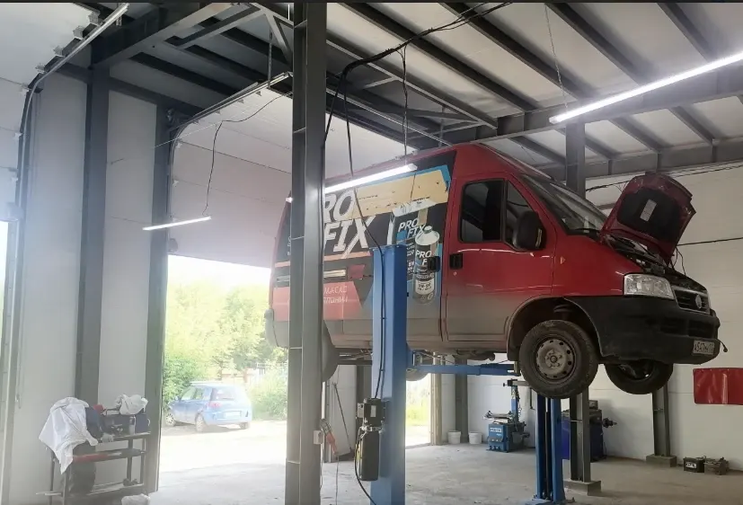
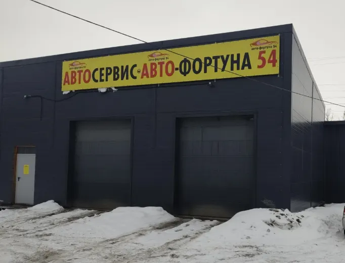
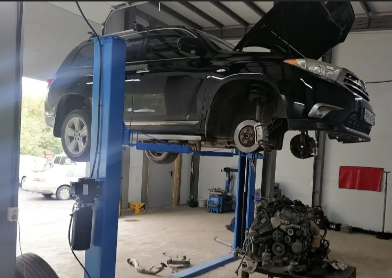
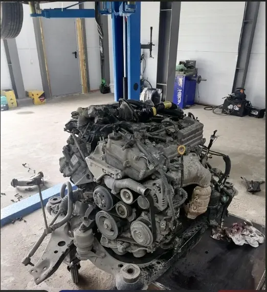

Авто-Сервис Авто-Фортуна 54
Легковой автосервис, ремонт бензиновых двигателей, ремонт ходовой части автомобиля, компьютерная диагностика, ремонт МКПП, ремонт выхлопных систем, ремонт электронных систем авто
- Рейтинг 5 в 2ГИС по 184 оценкам, 103 отзыва
- Сибиряков-Гвардейцев, 80/1, ежедневно 10:00–20:00 по записи
- Оплата картой, наличными, переводом и через банк

Что рядом с ремонтом
Входит
- Ремонт двигателей, ходовой, МКПП, выхлопных и электронных систем в одном месте
- Помогают подобрать и привезти деталь, если не хочется ехать самим – по отзывам
- Берутся за иномарки: Toyota, Mercedes, Honda, Renault и другие – по отзывам
- 10 парковок рядом
- Запись по телефону или в WhatsApp
Отдельно, если нужно
- Итоговая цена ремонта зависит от автомобиля и объёма работ
- Стоимость ремонта называют после диагностики
Услуги и цены
Цены «от» с карточки в 2ГИС, обновлены 5 февраля 2026. Точную стоимость называют после диагностики.
Двигатель и трансмиссия
- Замена масла ДВСот 600 ₽
- Регулировка клапановот 3 500 ₽
- Замена ГРМот 12 000 ₽
- Замена цепи ГРМот 15 000 ₽
- Замена сцепленияот 15 000 ₽
- Замена АКППот 15 000 ₽
- Замена ДВСот 25 000 ₽
- Капитальный ремонт ДВСот 50 000 ₽
Ходовая, тормоза и диагностика
- Компьютерная диагностикаот 1 000 ₽
- Диагностика видеоэндоскопомот 1 500 ₽
- Замена тормозных колодокот 1 000 ₽
- Замена шаровой опорыот 1 000 ₽
- Замена рулевого наконечникаот 600 ₽
- Замена рулевой тягиот 1 200 ₽
- Замена рулевой рейкиот 6 000 ₽
- Замена ступичного подшипникаот 2 000 ₽
Цены «от» взяты с карточки в 2ГИС. Остальные работы – уточнить.
Четыре шага от записи до выдачи
- 01
Записались
Позвонили или написали в WhatsApp, назвали марку и что нужно.
- 02
Диагностика
Мастер смотрит автомобиль, показывает и называет стоимость.
- 03
Ремонт
Делают работу, а если найдут что-то ещё – звонят и согласуют.
- 04
Выдача
Забираете машину и рассказываете, что понравилось.



Что говорят клиенты
Без развода на деньги
«Сделали быстро без развода на деньги. Сумма в процессе работы не поменялась» – из отзыва в 2ГИС.
Не навязывают лишнее
«Нет навязывания услуг. Всегда быстро и качественно» – из отзыва в 2ГИС.
Показывают и рассказывают
«Рассказали показали починили» – из отзыва в 2ГИС.
Привезут деталь
«Помогают подобрать товар и даже привезти необходимую деталь» – из отзыва в 2ГИС.
Отзывы с 2ГИС
«Меняли сайлентблоки развальных рычагов на фокусе, сделали быстро без развода на деньги. Сумма в процессе работы не поменялась.»
Андрей Останин · 18 сентября 2026
«Очень грамотные и ответственные ребята,делают все оперативно и качественно,там,где другие накосячили.всем рекомендую!»
Алексей Серженко · 29 сентября 2026
«Ребята классные специалисты. Нет навязывания услуг. Всегда быстро и качественно. Помогают подобрать товар и даже привезти необходимую деталь, если не хочется ехать самим.»
Ольга · 12 февраля 2026
Отзывы с карточки в 2ГИС, дословно.
Частые вопросы
Как записаться?
Позвоните по телефону +7 913 704-71-57 или напишите в WhatsApp. Работаем по предварительной записи.
Где вы находитесь?
Новосибирск, улица Сибиряков-Гвардейцев, 80/1, Кировский район. Рядом 10 парковок.
Какие услуги у вас есть?
Ремонт двигателей, ходовой, МКПП, выхлопных и электронных систем, компьютерная диагностика, замена масла.
Когда вы работаете?
Ежедневно с 10:00 до 20:00, по предварительной записи.
Запишитесь на удобное время
- Адрес
- Улица Сибиряков-Гвардейцев, 80/1, Новосибирск
- Часы
- Ежедневно с 10:00 до 20:00, по записи
- Телефон
- +7 913 704-71-57